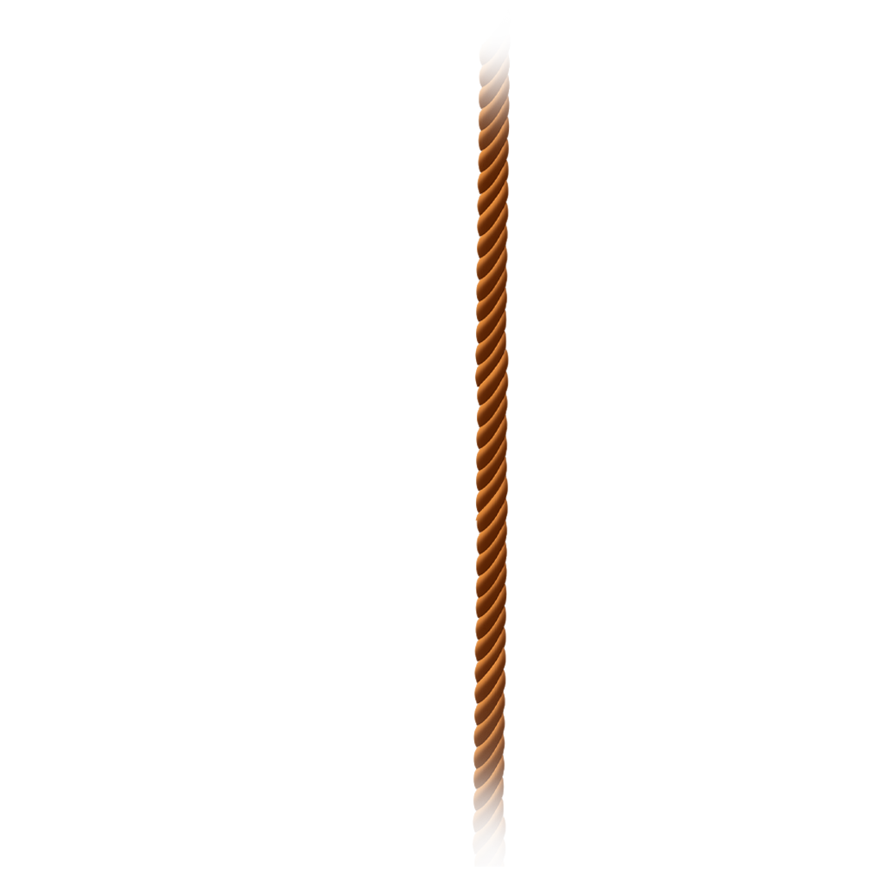
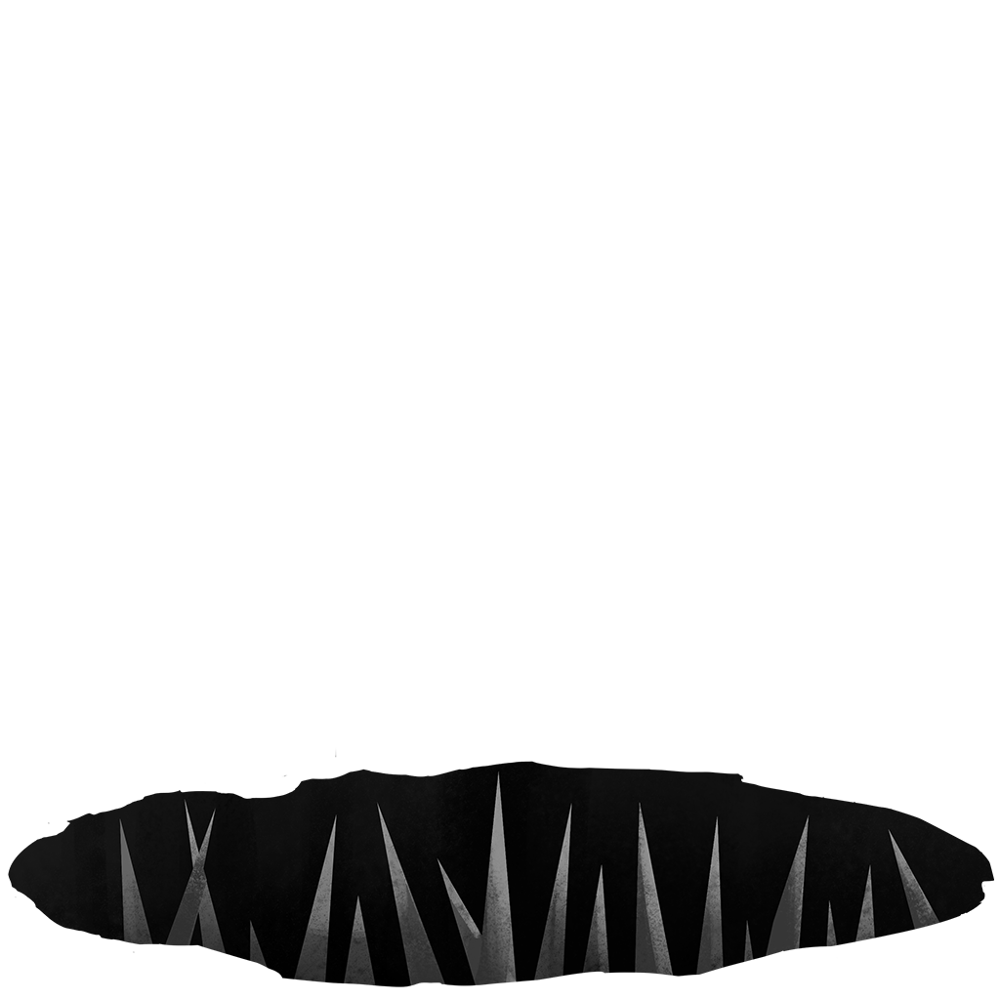
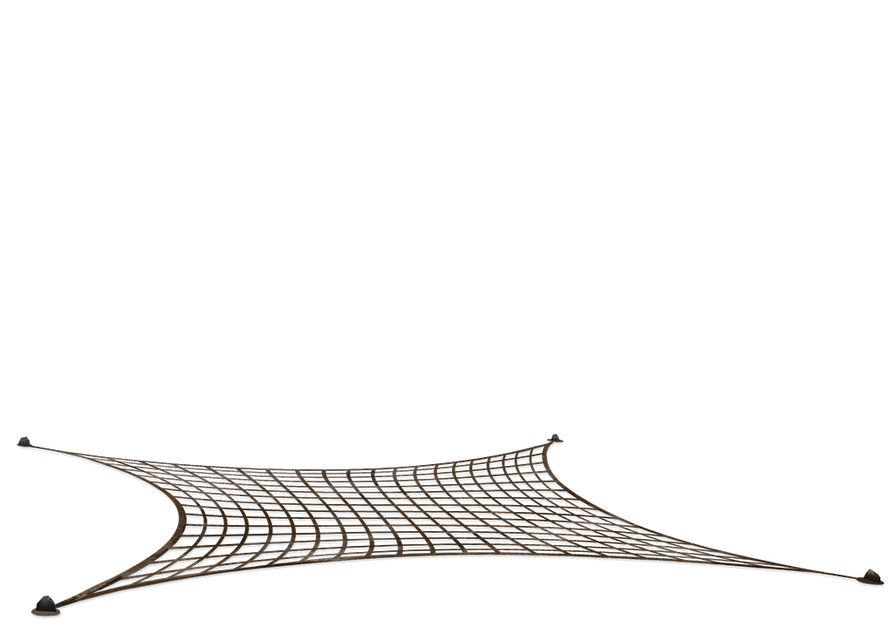
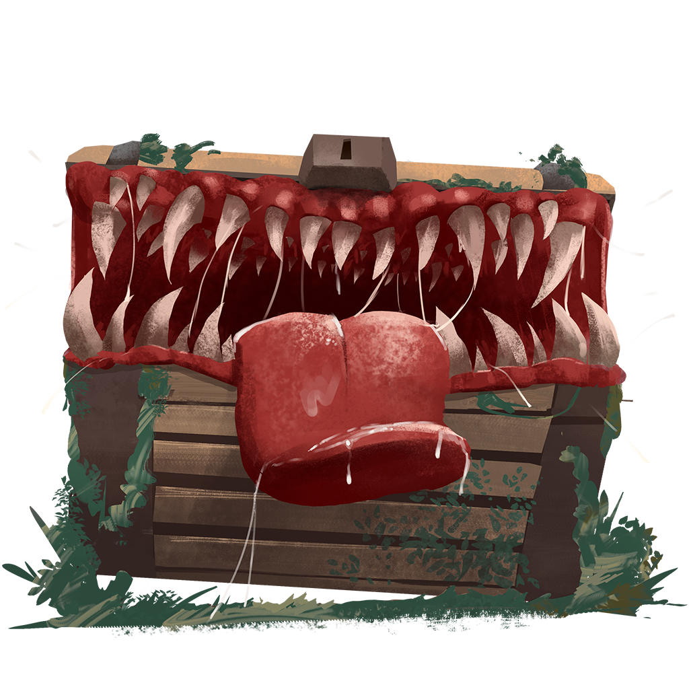

Disarm
A marker runs back and forth. Tap while it is over the hope window to disarm. Miss and the trap fires. More Trap Detection widens that window. A Torch can warn you the next room is a trap before you walk in.
Dungeon rooms
A trap room always starts a timing challenge. Hit the window and nothing happens. Miss, and the trap in that room fires. Trap Detection makes the safe window wider.

A marker runs back and forth. Tap while it is over the hope window to disarm. Miss and the trap fires. More Trap Detection widens that window. A Torch can warn you the next room is a trap before you walk in.

If it fires, you lose a portion of your maximum life. Shields do not stop it. Stronger floor traps take a larger slice. This can kill you.

If it fires, you lose a portion of your maximum life — the same kind of hit as a floor trap. It does not take Provision. Stronger rope traps take a larger slice. This can kill you.
If it fires, random items disappear from your dungeon backpack — one item on most gas traps, two on the heaviest. Empty slots are ignored. If the backpack has nothing to take, you lose nothing. Equipped gear, relics, potions in potion slots, and cards are not this loot.

If it fires, Mimic Bite cards are stuffed into your deck. How many, and how hard they bite, depends on the trap. A Mimic Bite is a one-mana Attack you can play on yourself: it deals Physical Piercing to you, then burns. Your Strength does not change that bite. Stronger mimics add more cards and a harder bite.
No trap matches that search.